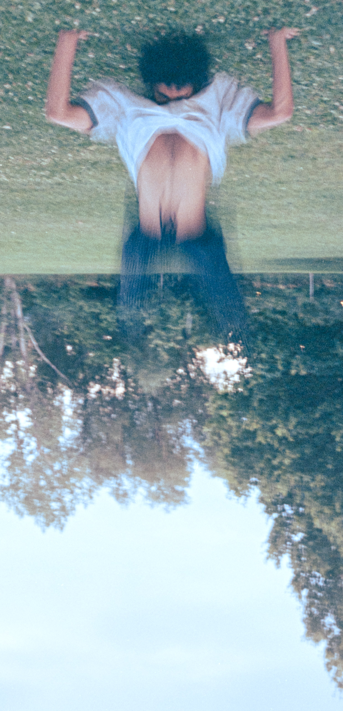

Selected frames
The Work
A cross-section of portraits, street, and nature — all shot on film or with vintage glass. Click any image to expand.

_FilmFujicolorSuperia400_PentaxSMCTakumar55mm.jpg)


Organic. Deliberate. Permanent. Photography with actual film stocks and vintage glass — where every frame costs something and the results show it.
The approach
There's something that happens when light hits silver halide crystals — a warmth, a grain, a three-dimensionality that digital sensors still can't fully replicate. Each film stock has its own personality. Kodak Ektachrome is vivid and contrasty. Fujicolor Superia pushes toward natural greens and mid-range skin tones. The film is part of the creative decision before the shutter ever fires.
Shooting film also forces a discipline that's hard to manufacture artificially: deliberateness. A roll of 36 means you compose more carefully, wait for the right moment, and commit. The results — whether portrait, landscape, or street — carry that intention in every frame.
I use actual film stocks combined with vintage glass (Jupiter 9, Pentax SMC Takumar) on modern bodies — marrying the optical character of analog lenses with the metering reliability of today's cameras. The best of both eras.

From idea to image
We talk through your vision: mood, location, occasion, and which film stock fits the look. No surprises — every session is planned around your specific situation.
I shoot deliberately, not reactively. Each frame is composed and considered. A 36-exposure roll means every shot earns its place.
Film is developed at a professional lab and scanned at high resolution — capturing the full tonal range and grain structure of the original negative.
You receive your digital scans in a private gallery, ready to download, print, or share. Archival-quality files that will last as long as the negatives.
Selected frames
A cross-section of portraits, street, and nature — all shot on film or with vintage glass. Click any image to expand.
Film sessions are intentionally limited — I shoot a finite number of rolls each month. Portraits, events, documentary rolls, or something specific you have in mind. If you're curious, reach out.
Colorado-based · Available nationwide